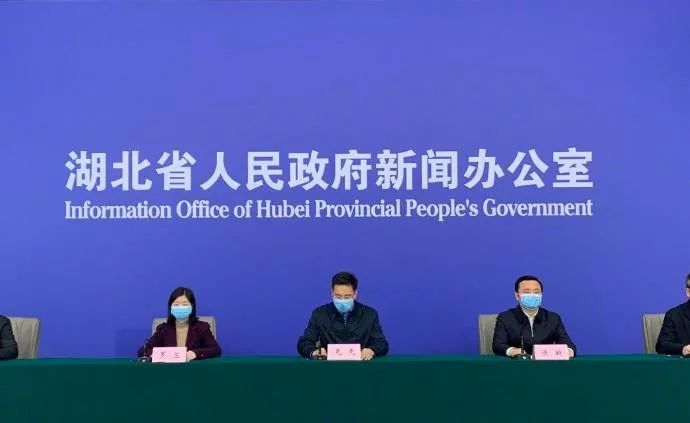

首次发布，湖北疫情风险等级评估报告出炉
原文链接 备份链接 2月29日，湖北首次发布《湖北省县（市、区）新冠肺炎疫情风险等级评估报告》，按低风险、中风险、高风险三个等级对所有103个县（市、区）进行等级评估。无确诊病例或连续14天无新增确诊病例为低风险地区；14天内有新增确诊病 …
澎湃新闻记者 邓雅菲
3月2日下午，湖北省新型冠状病毒肺炎疫情防控工作指挥部召开第37场新闻发布会，介绍随州市新冠肺炎疫情防控工作情况及江西省对口援助工作进展。

有记者提问，湖北省2月29号首次发布了湖北省县市区新冠肺炎疫情的风险等级评估报告，按照低、中、高三个等级对103个县市区进行了等级的评估，请问风险划定的标准是什么？高风险区域如何继续压实疫情防控的职责？低风险区域如何防止疫情反弹？
湖北省疾病预防控制中心副主任李阳介绍说，此次我省发布的风险等级评估报告是根据国务院应对新型冠状病毒感染肺炎疫情联防联控机制发布的《关于科学防治、精准施策、分区分级，做好新冠肺炎疫情防控工作的指导》中的风险划定标准开展的评估。具体的评估标准以区县为单位，无确诊病例或连续14天无新增确诊病例为低风险地区；14天内有新增确诊病例，累计确诊病例不超过50例，或累计确诊病例超过50例，但14天内未发生聚集性疫情的为中风险地区；累计确诊病例超过50例，14天内有聚集性疫情发生的为高风险地区。
李阳强调，虽然湖北省依据国家的标准进行了高、中、低风险等级的划分，但全省的疫情形势还很严峻。
李阳表示，我们要继续按照中央和省委省政府的部署，延续采取最严格的防控措施，继续把疫情防控作为全省的头等大事和最重要的工作，坚决做到防控之弦毫不放松、全力救治毫不放松、排查收治毫不放松、特殊场所管控毫不放松、严防严控毫不放松、物资保障毫不放松、保持社会大局稳定毫不放松。
李阳说，在高风险地区，进一步加强全面排查和“四类人员”的管控，抓住救治和阻隔两大关键环节，推进筛查甄别小区封闭管理，公共区域管控三个全覆盖，形成数据信息和收治工作两个闭环，强化五个方面的保障，做到应收尽收、应治尽治，切实提高治愈率，降低病死率；在中风险地区，要按照高风险地区的措施巩固各项防控措施，精准施策，严防社区传播，继续做好防控和救治工作；在低风险地区，要比照高风险地区的措施，防止疫情反弹，科学应对疫情变化。
戳这里进入
“全国新型冠状病毒感染病例实时地图”↓↓↓
本期编辑 常琛
推荐阅读


原文链接 备份链接 2月29日，湖北首次发布《湖北省县（市、区）新冠肺炎疫情风险等级评估报告》，按低风险、中风险、高风险三个等级对所有103个县（市、区）进行等级评估。无确诊病例或连续14天无新增确诊病例为低风险地区；14天内有新增确诊病 …
原文链接 备份链接 _ 建议疫情较轻的城市管理者要有敢于承担风险的意识，最大化提高科学防控方法和手段，自行决定何时复工和开业，从而降低经济和社会风险，恢复经济的正常平稳运行 _ 文 | 李铁 从1月23日武汉封城开始，已经过去半个多月了。 …
原文链接 备份链接 从趋势上看，新冠肺炎全球大流行可能无法避免，中国需一边打好国内阻击战，一边应对全球疫情带来的新风险。 文 | 信娜 朱贺 编辑 | 王小 空格 鉴于中国境外受新型冠状病毒疫情影响的国家和病例数量持续增加，2月28日，世 …
原文链接 备份链接 2月26日，北京发布一例新冠肺炎确诊病例信息引发舆论关注。北京市东城区崇外街道新怡家园社区居委会通过微信公众号发布确诊病例提示，称H女士2月22日从武汉来京，当日被隔离检查，3名亲属已进行集中隔离医学观察，并由区疾控中 …
原文链接 备份链接 全国多数省区已实现“零新增”，统计上未见疫情卷土重来证据，也未发现意味着疫情死灰复燃的个案 文/《财经》数据研究员徐进 图/《财经》视觉中心 编辑/谢丽容 今天是农历二月二“龙抬头”。按北方农村传统，今起春耕大忙开 …